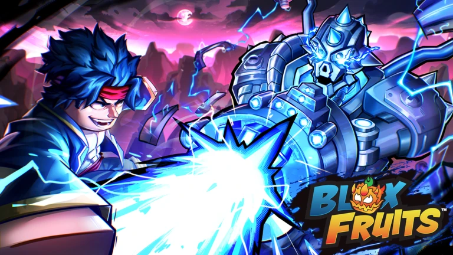

Melee
Reforça combate corpo a corpo e a energia usada para habilidades.
PARTE 03 · EQUIPAMENTO
Atributos, estilos e itens trabalham juntos. Uma configuração eficiente tem um propósito claro e ferramentas que se complementam.
Planeje sua build ↓
Os atributos definem onde seu personagem concentra seu potencial. Investir em todas as áreas ao mesmo tempo pode deixar o conjunto sem uma especialidade clara.
Reforça combate corpo a corpo e a energia usada para habilidades.
Aumenta a capacidade de resistir a ataques e permanecer em combate.
Direciona o dano para espadas e seus movimentos.
Fortalece o uso de armas de fogo e suas habilidades.
Direciona os pontos para o dano das habilidades de fruta.
Você pode alternar entre equipamentos durante o jogo. Pense no que cada espaço acrescenta à sua estratégia, em vez de escolher apenas pelo valor ou raridade.
Entrega ataques próximos, mobilidade e pressão. Também contribui para a energia do personagem.
FOCO · COMBATE PRÓXIMOOferece alcance e movimentos próprios. Algumas são usadas para abrir oportunidades ou concluir uma sequência.
FOCO · ALCANCE E CONTROLEPode aplicar pressão à distância, interromper movimentos ou ajudar a iniciar uma aproximação.
FOCO · PRESSÃO E ABERTURAAcrescenta bônus passivos. Compare os efeitos com o que sua build realmente precisa.
FOCO · BÔNUS COMPLEMENTARESUma build fica mais fácil de avaliar quando você testa uma mudança por vez contra o mesmo tipo de desafio.
Escolha entre missões, chefes, raids, exploração ou PvP.
Decida se os pontos vão priorizar fruta, espada, arma ou luta corpo a corpo.
Use os outros equipamentos para cobrir mobilidade, alcance ou controle.
Se algo falhar, altere apenas um componente e compare novamente.
PRÓXIMA PARTE
Veja atividades no mar, segredos e formas de acompanhar novidades com segurança.